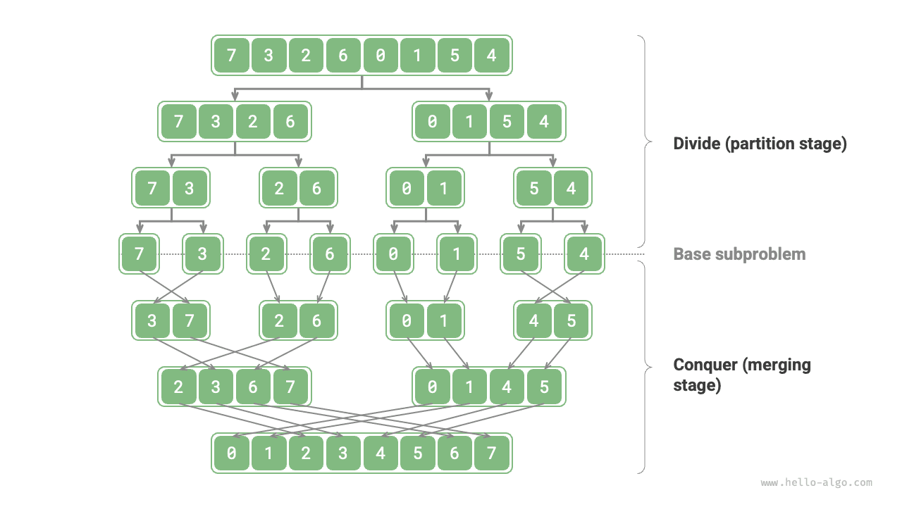
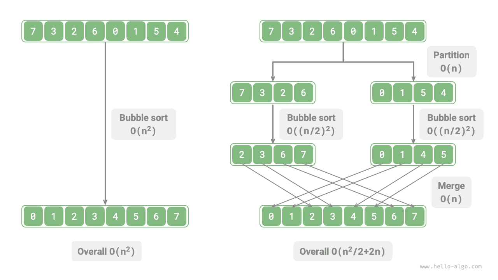
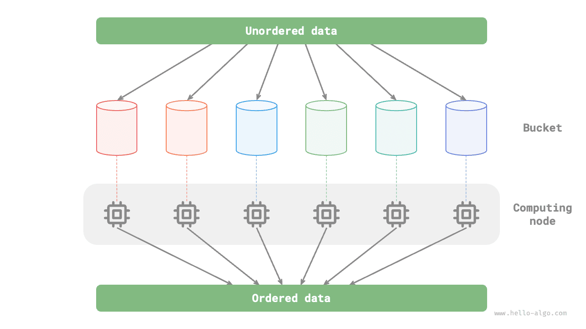

التقسيم والتغلب
خوارزميات التقسيم والتغلب
التقسيم والتغلب استراتيجية خوارزمية مهمة وشائعة جداً. ويُنفَّذ التقسيم والتغلب عادةً استناداً إلى التعاود، ويتألف من خطوتين: "التقسيم" و"التغلب".
- التقسيم (مرحلة الفصل): قسّم المسألة الأصلية تعاودياً إلى مسألتين فرعيتين أو أكثر حتى الوصول إلى أصغر مسألة فرعية.
- التغلب (مرحلة الدمج): انطلاقاً من أصغر المسائل الفرعية ذات الحلول المعلومة، ادمج حلول المسائل الفرعية من الأسفل إلى الأعلى لبناء حل المسألة الأصلية.
وكما يوضح الشكل أدناه، يُعد "ترتيب الدمج" أحد التطبيقات النموذجية لاستراتيجية التقسيم والتغلب.
- التقسيم: قسّم المصفوفة الأصلية (المسألة الأصلية) تعاودياً إلى مصفوفتين فرعيتين (مسألتين فرعيتين) حتى تحتوي المصفوفة الفرعية على عنصر واحد فقط (أصغر مسألة فرعية).
- التغلب: ادمج المصفوفات الفرعية المرتبة (حلول المسائل الفرعية) من الأسفل إلى الأعلى للحصول على مصفوفة أصلية مرتبة (حل المسألة الأصلية).

كيفية تحديد مسائل التقسيم والتغلب
يمكن عادةً تحديد ما إذا كانت مسألة ما مناسبة للحل بالتقسيم والتغلب استناداً إلى المعايير التالية.
- المسألة قابلة للتفكيك: يمكن تقسيم المسألة الأصلية إلى مسائل فرعية أصغر ومشابهة، ويمكن تقسيمها تعاودياً بالطريقة نفسها.
- المسائل الفرعية مستقلة: لا تداخل بين المسائل الفرعية، فهي مستقلة إحداها عن الأخرى ويمكن حلها بشكل مستقل.
- حلول المسائل الفرعية قابلة للدمج: يُحصل على حل المسألة الأصلية بدمج حلول المسائل الفرعية.
من الواضح أن ترتيب الدمج يستوفي هذه المعايير الثلاثة.
- المسألة قابلة للتفكيك: قسّم المصفوفة (المسألة الأصلية) تعاودياً إلى مصفوفتين فرعيتين (مسألتين فرعيتين).
- المسائل الفرعية مستقلة: يمكن ترتيب كل مصفوفة فرعية بشكل مستقل (يمكن حل المسائل الفرعية بشكل مستقل).
- حلول المسائل الفرعية قابلة للدمج: يمكن دمج مصفوفتين فرعيتين مرتبتين (حلّي مسألتين فرعيتين) في مصفوفة مرتبة واحدة (حل المسألة الأصلية).
تحسين الكفاءة عبر التقسيم والتغلب
لا يقتصر التقسيم والتغلب على حل مسائل خوارزمية بفعالية فحسب، بل كثيراً ما يحسّن كفاءة الخوارزمية أيضاً. ففي خوارزميات الترتيب، يكون الترتيب السريع وترتيب الدمج وترتيب الكومة أسرع من ترتيب الاختيار وترتيب الفقاعات وترتيب الإدراج لأنها تطبّق استراتيجية التقسيم والتغلب.
وهذا يطرح سؤالاً: لماذا يمكن للتقسيم والتغلب تحسين كفاءة الخوارزمية، وما المنطق الكامن وراء ذلك؟ بعبارة أخرى، لماذا يكون تقسيم مسألة كبيرة إلى عدة مسائل فرعية وحل المسائل الفرعية ودمج حلولها أكثر كفاءة من حل المسألة الأصلية مباشرةً؟ يمكن مناقشة هذا السؤال من جانبين: عدد العمليات، والحوسبة المتوازية.
تحسين عدد العمليات
بأخذ "ترتيب الفقاعات" مثالاً، تتطلب معالجة مصفوفة طولها $n$ زمن $O(n^2)$. لنفترض أننا قسّمنا المصفوفة عند نقطة المنتصف إلى مصفوفتين فرعيتين، كما يوضح الشكل أدناه. يتطلب التقسيم زمن $O(n)$، ويستغرق ترتيب كل مصفوفة فرعية زمن $O((n / 2)^2)$، ويتطلب دمج المصفوفتين الفرعيتين زمن $O(n)$، فيكون التعقيد الزمني الإجمالي:
$$ O(n + (\frac{n}{2})^2 \times 2 + n) = O(\frac{n^2}{2} + 2n) $$

بعد ذلك، لنحسب المتباينة التالية، حيث يمثّل الطرفان الأيسر والأيمن إجمالي عدد العمليات قبل التقسيم وبعده على التوالي:
$$ \begin{aligned} n^2 & > \frac{n^2}{2} + 2n \newline n^2 - \frac{n^2}{2} - 2n & > 0 \newline n(n - 4) & > 0 \end{aligned} $$
وهذا يعني أنه عندما $n > 4$، يكون عدد العمليات بعد التقسيم أصغر، وينبغي أن تكون كفاءة الترتيب أعلى. لاحظ أن التعقيد الزمني بعد التقسيم لا يزال تربيعياً $O(n^2)$، لكن الحد الثابت في التعقيد أصبح أصغر.
وبالمضي قدماً، ماذا لو واصلنا تقسيم المصفوفات الفرعية من نقاط منتصفها إلى مصفوفتين فرعيتين حتى تحتوي المصفوفات الفرعية على عنصر واحد فقط؟ هذا النهج هو في الواقع "ترتيب الدمج"، وتعقيده الزمني $O(n \log n)$.
وبالتفكير أكثر، ماذا لو حدّدنا عدة نقاط تقسيم وقسّمنا المصفوفة الأصلية بالتساوي إلى $k$ من المصفوفات الفرعية؟ هذا الوضع يشبه كثيراً "ترتيب الدلاء"، وهو ملائم جداً لترتيب كميات هائلة من البيانات، وتعقيده الزمني النظري $O(n + k)$.
تحسين الحوسبة المتوازية
نعلم أن المسائل الفرعية الناتجة عن التقسيم والتغلب مستقلة إحداها عن الأخرى، لذا يمكن عادةً حلها على التوازي. وهذا يعني أن التقسيم والتغلب لا يقلّل التعقيد الزمني للخوارزميات فحسب، بل يقبل أيضاً التحسين المتوازي من نظام التشغيل.
يكون التحسين المتوازي فعّالاً بشكل خاص في البيئات متعددة الأنوية أو المعالجات، حيث يستطيع النظام معالجة عدة مسائل فرعية في الوقت نفسه، مما يحقق استخداماً أكمل لموارد الحوسبة ويقلّل زمن التنفيذ الإجمالي تقليلاً كبيراً.
على سبيل المثال، في "ترتيب الدلاء" الموضح في الشكل أدناه، نوزّع كميات هائلة من البيانات بالتساوي على دلاء متعددة، ويمكن توزيع مهام ترتيب جميع الدلاء على وحدات حوسبة متعددة. وبعد الانتهاء، تُدمج النتائج.

التطبيقات الشائعة للتقسيم والتغلب
من جهة، يمكن استخدام التقسيم والتغلب لحل كثير من المسائل الخوارزمية الكلاسيكية.
- إيجاد أقرب زوج من النقاط: تقسم هذه الخوارزمية مجموعة النقاط أولاً إلى قسمين، ثم تجد أقرب زوج من النقاط في كل قسم على حدة، وأخيراً تجد أقرب زوج من النقاط يمتد عبر القسمين.
- ضرب الأعداد الصحيحة الكبيرة: مثل خوارزمية Karatsuba، التي تفكّك ضرب الأعداد الصحيحة الكبيرة إلى عدة عمليات ضرب وجمع لأعداد صحيحة أصغر.
- ضرب المصفوفات: مثل خوارزمية Strassen، التي تفكّك ضرب المصفوفات الكبيرة إلى عدة عمليات ضرب وجمع لمصفوفات صغيرة.
- مسألة أبراج هانوي: يمكن حل مسألة أبراج هانوي بالتعاود، وهي تطبيق نموذجي لاستراتيجية التقسيم والتغلب.
- حل أزواج الانعكاس: في متتالية ما، إذا كان عدد سابق أكبر من عدد لاحق، فإن هذين العددين يشكّلان زوج انعكاس. ويمكن حل مسألة أزواج الانعكاس باستخدام نهج التقسيم والتغلب بمساعدة ترتيب الدمج.
ومن جهة أخرى، يُطبَّق التقسيم والتغلب على نطاق واسع في تصميم الخوارزميات وبنى البيانات.
- البحث الثنائي: يقسم البحث الثنائي مصفوفة مرتبة إلى قسمين من فهرس المنتصف، ثم يقرّر أي نصف سيستبعده استناداً إلى نتيجة المقارنة بين قيمة الهدف وقيمة العنصر الأوسط، وينفّذ خطوة البحث الثنائي ذاتها على المجال المتبقي.
- ترتيب الدمج: سبق تقديمه في بداية هذا القسم، فلا حاجة إلى مزيد من التفصيل.
- الترتيب السريع: يختار الترتيب السريع قيمة محورية، ثم يقسم المصفوفة إلى مصفوفتين فرعيتين، إحداهما بعناصر أصغر من المحور والأخرى بعناصر أكبر من المحور، ثم ينفّذ عملية التقسيم ذاتها على هذين القسمين حتى تحتوي المصفوفات الفرعية على عنصر واحد فقط.
- ترتيب الدلاء: تتمثل الفكرة الأساسية لترتيب الدلاء في توزيع البيانات على عدة دلاء، ثم ترتيب العناصر داخل كل دلو، وأخيراً استخراج العناصر من كل دلو بالتتابع للحصول على مصفوفة مرتبة.
- الأشجار: مثل أشجار البحث الثنائية، وأشجار AVL، والأشجار الحمراء السوداء، وأشجار B، وأشجار B+، وغيرها. يمكن النظر إلى عمليات البحث والإدراج والحذف فيها جميعاً على أنها تطبيقات لاستراتيجية التقسيم والتغلب.
- الأكوام: الكومة شجرة ثنائية تامة خاصة، وتنطوي عملياتها المختلفة، مثل الإدراج والحذف وبناء الكومة (heapify)، على فكرة التقسيم والتغلب.
- جداول التجزئة: مع أن جداول التجزئة لا تطبّق التقسيم والتغلب مباشرةً، فإن بعض طرق حل تصادمات التجزئة تطبّق استراتيجية التقسيم والتغلب بشكل غير مباشر. فمثلاً، قد تُحوَّل القوائم المترابطة الطويلة في أسلوب السلسلة (chaining) إلى أشجار حمراء سوداء لتحسين كفاءة البحث.
وكما يتبين، فإن التقسيم والتغلب فكرة خوارزمية "منتشرة بهدوء"، متجسّدة في مختلف الخوارزميات وبنى البيانات.